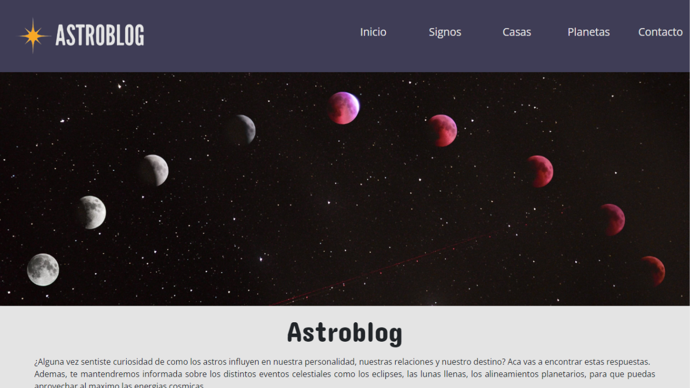
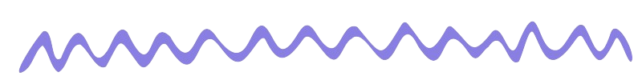
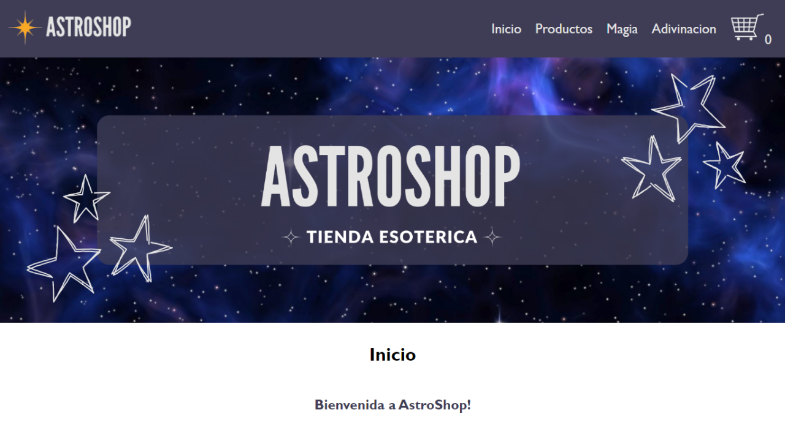
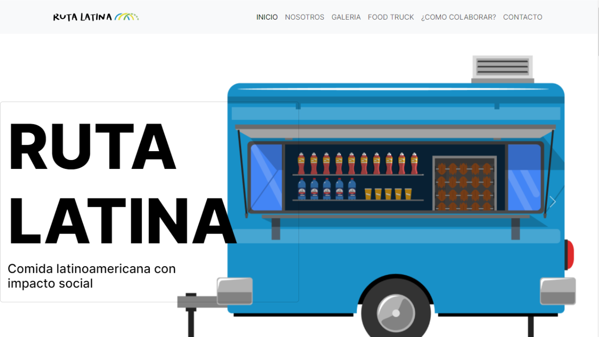
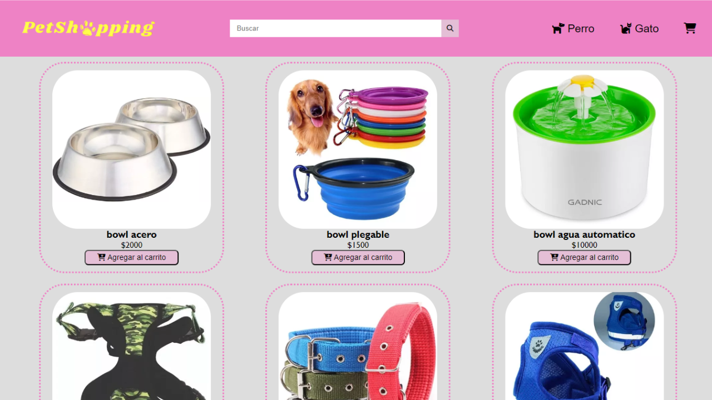
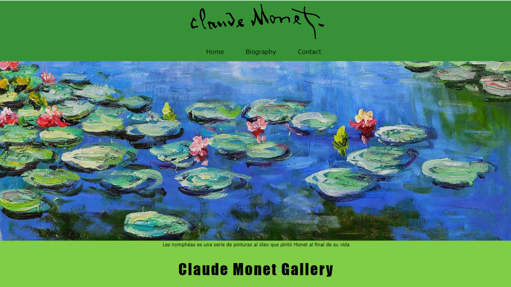
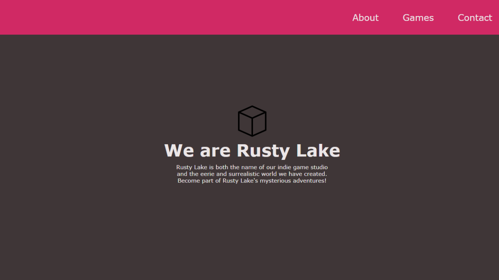

Projects
AstroBlog

AstroBlog is a blog dedicated to astrology that immerses you
in a unique digital universe. Developed entirely in HTML and CSS, this space stands
out for its celestial design and interactive features.
The homepage welcomes you with blog entries, while pages dedicated to signs,
houses, and planets invite you to explore the intricacies of astrology in depth.
Additionally, AstroBlog features a contact form for visitors to share their experiences
or make personalized inquiries.

AstroShop

AstroShop, the natural evolution of AstroBlog, is an ecommerce
platform dedicated to esotericism.
I have created an interactive interface with ReactJS that responds promptly to user
needs, enabling smooth navigation among astrological products.
AstroShop not only represents a leap forward in my web development journey but also
showcases my proficiency with ReactJS in transforming the user experience in a specialized
ecommerce setting.
Ruta Latina
By: Generando Puentes

Ruta Latina is a food truck that aims to bring Latin American cuisine
to different locations. It's not just about offering delicious food; it has a bigger purpose:
to help low-income communities while economically supporting the NGO.
Additionally, it's important to mention that this project was developed with a team of 5 people,
including another Programmer, two UX/UI designers, and a Digital Marketing specialist. It's a
real project we developed using React.js for the "Generando Puentes" NGO in Mendoza, Argentina,
in collaboration with Coderhouse. We worked for 45 days alongside the organization to ensure
that the website met all their expectations and requirements.
PetShopping

PetShopping is a vibrant ecommerce platform for animal lovers, built
with HTML, CSS, and JavaScript.
The friendly and colorful design invites users to explore a variety of products, such as
toys or accessories. The implementation of JavaScript ensures a dynamic interface that
responds quickly to user preferences, enhancing the browsing and product selection experience.
Interactive features, such as search filters and an intuitive shopping cart, make the
purchasing process simple.
Monet Homage

Monet Homage is a captivating website dedicated to the painter Claude
Monet, built exclusively with HTML and CSS. This unique site encapsulates the essence of
the artist in a single-page experience.
The page stands out for its colorful and extravagant design, using a palette inspired by
Monet. The arrangement of sections, from his biography to his most iconic works, creates
a seamless visual narrative.
This tribute website is a visual celebration of Monet.
RustyLake Tribute

Rusty Lake Tribute is a homage website to the creativity and mystery
of the renowned game company Rusty Lake. Designed exclusively with HTML and CSS, this page
encapsulates the intriguing essence of their games in an immersive single-page experience.
The design reflects the unique aesthetic of Rusty Lake, with carefully selected visual
elements that capture the essence of their titles. From their early games to the most recent
releases, the page presents a visual narrative that invites visitors to delve into the
intriguing universe of Rusty Lake.
With a single-page structure, the browsing experience is smooth and immersive.